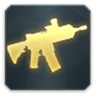
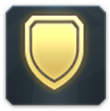
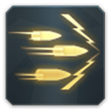
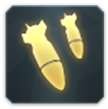
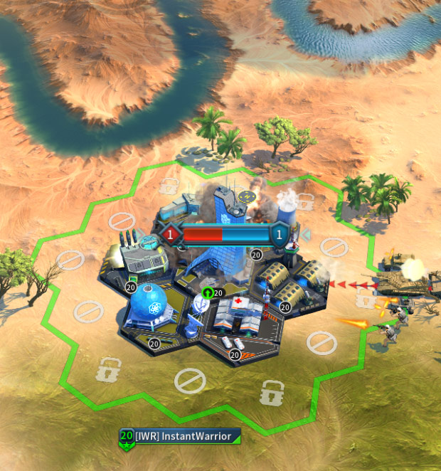

Overview
Commander, before getting in to the down and dirty aspects of fighting you should know a few things first. There are 5 unit types at your disposal. Each with its own strengths and weaknesses. When engaging an opponent you should always consider what you will face in combat. One way to check that is to Scout the target before attacking. This will help pick a better strategy in terms of units. The troop dependencies are described in the table bellow:
| Infantry | UGV | Armored | LSV | Artillery | |
|---|---|---|---|---|---|
| Infantry | - | +50% | -50% | +25% | -25% |
| UGV | -25% | - | +50% | -50% | +25% |
| Armored | +25% | -25% | - | +50% | -50% |
| LSV | -50% | +25% | -25% | - | +50% |
| Artillery | +50% | -50% | +25% | -25% | - |
Of course you can also view each troops stats, strengths and weaknesses at any time through the Recruit menu of your Military District. Once the attack begins, the battle is done in real time and Commanders that are in the same alliance as either the defender of attacker can join in at any time through out the duration of the battle.
Ongoing Battles
When there is a battle anywhere on the map, you will see a bar above the spot, that is divided into two parts, blue and red with numbers on the side. The Red portion refers for the attacking force and the blue for Defending. The numbers indicate how many participants are in this particular battle at this point. Depending on which side is prevailing at this moment, one of the two colors will gradually fill the bar more and more. Tapping over that Bar will allow you to enter the Battle View and observe the battle in real time regardless if you are in it or not.
Wounded Troops and Army Survivability
Wounded Troops
At the end of each battle some of your troops can be either Killed or Wounded. Your wounded troops are immediately transferred to the Recovery Facility in your Civil District until the recover capacity is filled. If any of your troops get wounded while your recovery capacity is full, it will not be possible to threat them and they will be lost - this is why you should always take care of your wounded.
Army Survivability
Army Survivability refers to your troops' ability to recover after sustaining lethal damage. This means that your troops have a higher chance to get wounded instead of killed while battling. Army Survivability differs depending on the Terrain and your Role as Attacker or Defender. For example when Defending your City from Enemy attacks 100% of your Killed troops are converted to Wounded until your recover capacity is filled. You can check the table below for more details about Army Survivability:
| Terrain | Role | Army Survivability |
|---|---|---|
| Player City | Attacker | 0% |
| Defender | 100% | |
| Player Camp | Attacker | 50% |
| Defender | 50% | |
| Alliance Building | Attacker | 50% |
| Defender | 50% | |
| Encounter | Attacker | 100% |
| Encounter | Attacker | 0% |
| Defender | 100% |
Battle View
In this mode you can observe in better detail what is happening on the battlefield. If you are in this battle there a retreat button that will allow you to leave after a short period of time and reduce your losses if the combat isn't going well. After retreating the army always return to your city. Same applies if combat ends normally.
Victory Condition
The army that remains on the field either because it has defeated all opposing troops or the other side has retreated, is pronounced victorious. Rewards are given only if victorious against your opponents.
Troop Benefits
One major addition are the Researches, General's Skills, Equipment items and Alliance Technologies that provide major bonuses to your troops and play a vital role in the outcome of any battle. Always bring your best in order to defeat your opponents.
Additionally you can increase your army's statistics temporarily, by using Boosters